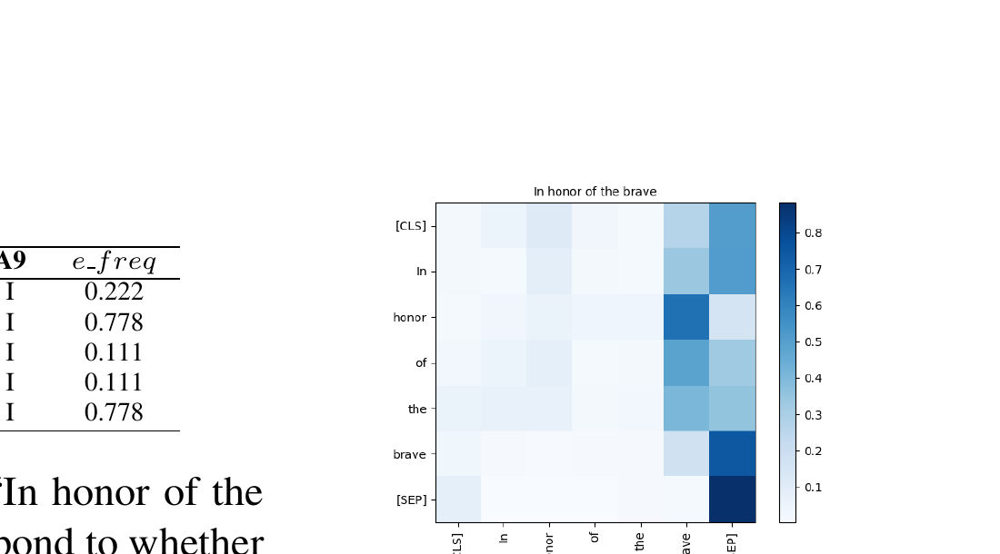

A zero-shot emphasis selection method that exploits self-attention distributions of pre-trained language models (PLMs) to identify words deserving emphasis in visual media text, achieving a Ranking Score of 0.6898 on the SemEval-2020 Task 10 validation set without any task-specific training.

In visual communication such as social media posts, posters, flyers, and advertisements, text emphasis is crucial for conveying the author's intent and facilitating comprehension. When designing visual media, content creators must decide which words to make bold, italic, larger, or differently colored — choices that dramatically affect how the message is perceived by the audience. An automatic system that recommends which words to emphasize could significantly accelerate the creation of visual media content and help non-expert designers produce more effective materials.
SemEval-2020 Task 10 formalizes this as the emphasis selection problem: given short English sentences from Adobe Spark (e.g., "In honor of the brave"), predict the correct ranking of words based on emphasis frequency annotations from nine human annotators. Each annotator independently selects up to four words they would emphasize in a visual context, and the emphasis frequency of a word is defined as the proportion of annotators who selected it. The task thus requires modeling a fundamentally subjective phenomenon — what humans collectively consider "important" in visual text.
Core Insight: Recent studies have shown that Transformer-based PLMs such as BERT encode rich linguistic knowledge in their self-attention distributions — for example, certain attention heads can parse dependency trees (Clark et al., 2019) or induce constituency structures (Kim et al., 2020). This paper hypothesizes that some attention heads are naturally specialized for emphasis selection, making it possible to identify important words in a fully zero-shot manner, without any supervised training or gold-standard annotations. This is particularly compelling because emphasis selection is inherently subjective: rather than learning from potentially noisy labels, the method leverages the distributional semantics already captured during pre-training.
Unlike prior approaches to keyword extraction or keyphrase generation — which typically rely on statistical measures (TF-IDF), graph-based algorithms (TextRank), or supervised neural models — this work takes a fundamentally different path by treating attention weights as a direct proxy for word importance. The key question driving this research is: Does the way a PLM internally "attends" to words during language modeling correlate with human judgments of emphasis?
The method derives emphasis frequency (e_freq) for each word from PLM attention maps. Given a sentence fed to a PLM, an attention map g(i,j) is extracted for the j-th attention head on the i-th layer. Since most PLMs use subword tokenization (e.g., WordPiece for BERT), the subword-level attention maps must be converted to word-level by averaging attention weights of subword tokens belonging to the same word. Three strategies are then proposed for converting attention maps into emphasis scores:
A critical implementation detail is the subword aggregation step: when a word is split into multiple subword tokens (e.g., "emphasize" → "em", "##pha", "##size"), the attention weights of all subword tokens are averaged to produce a single word-level score. This ensures that the method operates at the word level, matching the granularity of the emphasis annotations.
Evaluated on the SemEval-2020 Task 10 dataset consisting of short English sentences from Adobe Spark (flyers, posters, ads, motivational memes), with emphasis annotations from nine annotators. The dataset contains 3,000 instances split into training (70%), validation (10%), and test (20%) sets. Performance is measured by Matchm (overlap of top-m emphasized words between prediction and gold standard) and the Ranking Score (average of Match1 through Match4). Six PLMs were evaluated: BERT-base-uncased, BERT-large-uncased, DistilBERT-base-uncased, DistilBERT-base-multilingual, RoBERTa-base, XLNet-base, and GPT-2.
| Model | Method | Match1 | Match2 | Match3 | Match4 | R (dev) | R (test) |
|---|---|---|---|---|---|---|---|
| Random | - | 0.173 | 0.309 | 0.375 | 0.452 | 0.327 | 0.318 |
| TF-IDF | - | 0.306 | 0.462 | 0.615 | 0.676 | 0.515 | 0.518 |
| BERT-base-uncased | Word2Target | 0.431 | 0.625 | 0.725 | 0.765 | 0.637 | 0.625 |
| BERT-large-uncased | Word2Target | 0.449 | 0.623 | 0.736 | 0.760 | 0.642 | 0.629 |
| DistilBERT-base-uncased | Word2Target | 0.454 | 0.619 | 0.726 | 0.768 | 0.642 | 0.629 |
| DistilBERT-base-multi. | Word2Target | 0.436 | 0.626 | 0.714 | 0.761 | 0.634 | 0.620 |
| RoBERTa-base | CLS2Target | 0.441 | 0.589 | 0.688 | 0.715 | 0.608 | - |
| GPT-2 | Word2Target | 0.225 | 0.435 | 0.569 | 0.625 | 0.463 | - |
| Ensemble (Top-5) | - | 0.485 | 0.679 | 0.780 | 0.815 | 0.690 | 0.666 |
| Supervised Baseline | - | 0.592 | 0.752 | 0.804 | 0.822 | 0.742 | 0.750 |
This work provides concrete evidence that pre-trained language models implicitly learn word importance through their self-attention mechanisms during pre-training. The fully zero-shot approach eliminates the need for expensive, subjective emphasis annotations, making it practical for automated visual media creation tools — a significant advantage in real-world applications where emphasis judgments are inherently subjective and costly to collect at scale.
From a scientific perspective, the discovery of specialized attention heads deepens our understanding of what linguistic knowledge PLMs encode. The finding that certain heads are naturally "tuned" for emphasis selection — without ever being explicitly trained on emphasis data — raises intriguing questions about the emergence of pragmatic knowledge during language model pre-training. It suggests that the distributional patterns in large text corpora encode not just syntactic and semantic information, but also aspects of communicative importance.
Practically, the method's simplicity (requiring only a single forward pass and no gradient computation) makes it suitable for real-time deployment in content creation tools. The ensemble approach offers a principled way to improve accuracy when slightly higher latency is acceptable. This work also opens the door to probing PLMs for other word-level importance phenomena — such as prosodic stress prediction, summarization salience estimation, or information structure analysis — using the same attention-based framework.